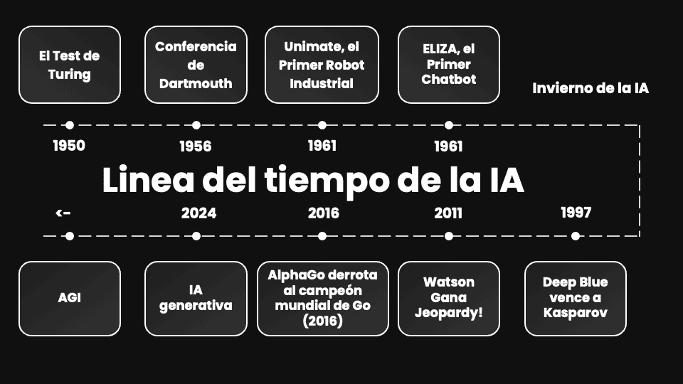
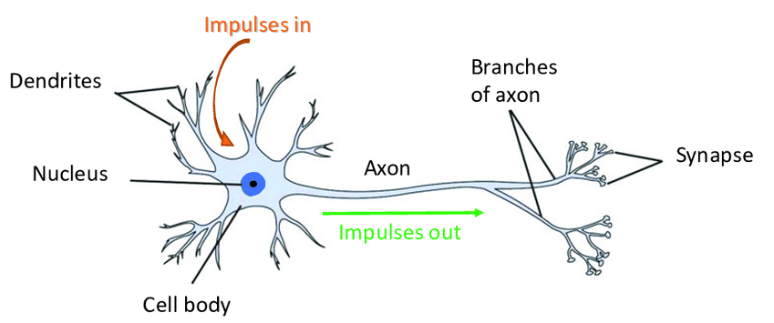
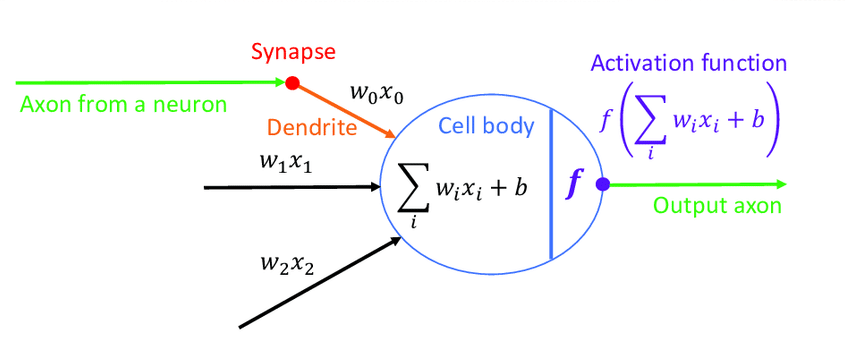

“La IA es la ciencia de hacer que las máquinas hagan cosas que requerirían inteligencia si las hiciera un humano.” — Marvin Minsky
La IA es un campo de la informática que se enfoca en crear sistemas capaces de realizar tareas que normalmente requieren inteligencia humana, como el aprendizaje, la toma de decisiones y la resolución de problemas.
📜 Guía de hitos: Línea del tiempo de la IA

Figura 1: Principales hitos en la evolución de la Inteligencia Artificial (1950–2024)
NotaDetalle de los hitos históricos (Click para expandir)
Año
Hito
Descripción
1950
Test de Turing
Alan Turing propuso que una máquina podía considerarse “inteligente” si un ser humano, al conversar con ella, no podía distinguirla de otra persona.
1956
Conferencia de Dartmouth
Considerada el nacimiento oficial del término Inteligencia Artificial. Un grupo de científicos planteó que las máquinas podrían resolver problemas hasta entonces exclusivos de los humanos.
1961
Unimate
El primer robot industrial. Trabajaba en la cadena de montaje de General Motors, realizando tareas repetitivas y peligrosas.
1966
ELIZA
El primer chatbot. Aunque simple y basado en reglas, demostró el poder del lenguaje natural e hizo creer a muchas personas que “tenía sentimientos”.
1970
Invierno de la IA
Periodo de frustración (años 70 – 80) donde las expectativas superaron la tecnología disponible; los proyectos se estancaron por falta de resultados.
1997
Deep Blue vence a Kasparov
Un momento histórico para la humanidad. Por primera vez una computadora derrotó al campeón mundial de ajedrez, mostrando la capacidad de cálculo de la IA.
2011
Watson gana Jeopardy!
IBM creó una IA capaz de entender preguntas, bromas y dobles sentidos, para ganar el famoso un famoso concurso de preguntas en TV.
2016
AlphaGo derrota al campeón mundial de Go
El Go, mucho más complejo que el ajedrez, fue conquistado por la IA de Google DeepMind, que usó estrategias nunca vistas por humanos.
2024
IA Generativa
La era actual: La IA ha evolucionado: ya no solo simula el análisis de datos existentes, sino que ahora simula la capacidad creativa para generar imágenes, música y textos desde cero.
¿Sabías que…? (Curiosidades)
Ajedrez: En 1997, IBM demostró que la fuerza bruta de cálculo podía vencer a la intuición humana.
El término: La palabra “Inteligencia Artificial” fue acuñado en 1956 por John McCarthy durante la Conferencia de Dartmouth, marcando el inicio formal del campo de estudio.
“La IA ya no se limita a simular el análisis de la información; hoy, simula la creación misma, generando contenido original (textos, arte, código) que antes era terreno exclusivo del ser humano.”
El futuro – AGI (Inteligencia Artificial General)
El gran objetivo: una IA capaz de aprender y realizar cualquier tarea intelectual humana de forma autónoma. Aunque aún estamos lejos de lograrlo, el avance hacia la AGI plantea preguntas profundas sobre la naturaleza de la inteligencia y el papel de los humanos en un mundo cada vez más automatizado.
Importante🧠 Gran Debate: ¿La IA piensa o solo calcula?
“Si la IA ya simula la creación tan bien que nos cuesta distinguirla, ¿la línea que nos separa de las máquinas está en lo que hacemos o en cómo lo hacemos?”
Dinámica de clase: El Oráculo de la IA
¿Qué creéis que la IA NUNCA podrá sustituir en vuestro trabajo diario? (Anotar las respuestas en la pizarra para debatirlas al final de la jornada).
“La IA ya no se limita a simular el análisis de la información; hoy, simula la creación misma, generando contenido original (textos, arte, código) que antes era terreno exclusivo del ser humano.”
¿Qué significa esto en el día a día?
Antes: La IA nos decía si un correo era Spam.
Ahora: La IA escribe el correo por nosotros, imitando nuestro estilo.
Pregunta para la clase: Si una máquina puede simular perfectamente tu trabajo creativo… ¿cuál es tu nuevo valor añadido como profesional?
Importante🧠 Gran Debate: ¿La IA piensa o solo calcula?
Muchos dicen que la IA ya “piensa”. Otros, que es solo una simulación matemática extremadamente avanzada.
¿Qué creen ustedes? ¿Puede una máquina realmente “entender” o solo imita patrones?
1.1. La IA como Herramienta de Predicción
La IA se basa en algoritmos que analizan grandes cantidades de datos para identificar patrones y hacer predicciones. Esto es fundamental para aplicaciones como la predicción del clima, recomendaciones de productos y detección de fraudes.

Neurona Biológica

Neurona Artificial
Ejemplo: Predicción del clima, recomendaciones de productos, detección de fraudes.
2. La IA como Herramienta de Predicción
[cite_start]La Inteligencia Artificial moderna no opera mediante reglas rígidas, sino que se basa en algoritmos que analizan grandes volúmenes de datos para identificar patrones y generar predicciones probabilísticas[cite: 26]. [cite_start]Este enfoque es el que permite aplicaciones críticas como la detección de fraudes, recomendaciones personalizadas o la predicción climática[cite: 27, 28].
El Modelo Fundacional: La Neurona Artificial
[cite_start]Para comprender cómo predice una máquina, debemos observar su unidad básica de cálculo, la cual imita el comportamiento de las neuronas biológicas[cite: 32].
Figura 2: Comparación entre la estructura de una neurona biológica y el modelo matemático de un perceptrón (neurona artificial).
¿Cómo funciona este proceso?
[cite_start]Una neurona artificial es una unidad de cálculo que procesa información siguiendo estos pasos lógicos[cite: 32]:
[cite_start]Entradas (\(x\)): Recibe un vector de datos provenientes del exterior o de otras neuronas[cite: 32].
[cite_start]Pesos (\(w\)): Cada entrada tiene un peso asociado que indica su importancia relativa en el proceso de decisión[cite: 32].
[cite_start]Regla de Propagación: El sistema multiplica cada entrada por su peso, suma todos los resultados y añade un sesgo (\(b\)) para ajustar la sensibilidad del modelo[cite: 32].
[cite_start]Función de Activación (\(f\)): El resultado final se pasa por una función que decide si la neurona se “excita” (genera una salida activa) o permanece inactiva[cite: 32]. [cite_start]Este resultado final es lo que conocemos como activación[cite: 32].
ImportanteConcepto Clave: Aprendizaje vs. Reglas
A diferencia de la programación tradicional, la IA aprende de ejemplos. [cite_start]No se le dictan reglas fijas; el sistema ajusta automáticamente sus pesos (\(w\)) hasta que sus predicciones coinciden con la realidad[cite: 29, 36, 37].
Aplicación Práctica: De las Reglas a la Predicción
[cite_start]Para visualizar este “salto tecnológico”, comparamos un sistema de tasación inmobiliaria basado en reglas manuales frente a uno que utiliza aprendizaje automático[cite: 31, 32].
Se basa en sentencias if-else. [cite_start]Si el programador olvida incluir una variable (como “vistas al mar”), el sistema es incapaz de valorar esa característica por sí solo[cite: 31].
def tasador_manual(metros, zona): precio_base = metros *1500if zona =="Centro":return precio_base +50000elif zona =="Playa":return precio_base +80000else:return precio_baseprint(f"Precio (Reglas): {tasador_manual(80, 'Centro')}€")
Precio (Reglas): 170000€
💡 Nota: La IA aprende de ejemplos, no de reglas fijas.
….. ## 3. Algoritmos Tradicionales vs. Modelos de Aprendizaje ⚙️ ### 💻 Recurso Interactivo: El Salto Tecnológico
Observad la diferencia entre dar una orden rígida y dejar que el sistema aprenda.
1. Programación Tradicional (Reglas fijas)
En este modelo, si el programador olvida una regla (ej. “vistas al mar”), el precio nunca cambiará aunque la casa sea preciosa.
Recurso Interactivo: El Salto Tecnológico
Aquí compararemos un sistema basado en reglas (If-Else) frente a uno predictivo.
🛠️ Recurso Práctico: De las Reglas a la Predicción Para experimentar con estos conceptos, utilizaremos Google Colab, una herramienta que te permite ejecutar código en la nube sin instalar nada en tu ordenador.
# Ejemplo de programación tradicionaldef tasador_manual(metros, zona): precio_base = metros *1500# Aquí definimos las "reglas"if zona =="Centro":return precio_base +50000elif zona =="Playa":return precio_base +80000else:return precio_base# Prueba cambiando los valores abajo:resultado = tasador_manual(80, "Centro")print(f"Precio calculado por reglas: {resultado}€")
Precio calculado por reglas: 170000€
En este ejemplo, el modelo de aprendizaje puede ajustar su predicción basándose en los datos, mientras que la programación tradicional no puede adaptarse a nuevas situaciones sin modificar el código.
El modelo de “IA” (Aprendizaje Automático) 🧠 Ahora, en lugar de escribir reglas, vamos a darle ejemplos a la IA para que ella “deduzca” cuánto vale cada característica. Verás que no es magia, sino un ajuste matemático de pesos.
import numpy as npfrom sklearn.linear_model import LinearRegression# Datos de ejemplo: metros cuadrados, zona (0=Interior, 1=Playa), precioX = np.array([[80, 0], [80, 1], [100, 0], [100, 1], [120, 0], [120, 1]])y = np.array([120000, 200000, 150000, 250000, 180000, 300000]) # Entrenamos el modelomodelo = LinearRegression() modelo.fit(X, y)# Prueba con nuevos datosnueva_casa = np.array([[90, 1]]) # 90 metros en zona de playaprediccion = modelo.predict(nueva_casa)print(f"Precio predicho por IA: {prediccion[0]:.2f}€")
Precio predicho por IA: 230000.00€
4. IA de Película vs. IA de Bolsillo
IA General (Ficción): El mito de Terminator.
IA Estrecha (Realidad): Netflix, Google Maps y ChatGPT.
5. Cierre: Tu primer Prompt efectivo
Para que la IA pase de darnos respuestas genéricas a soluciones brillantes, usaremos la fórmula R-T-C:
Rol: Dile quién debe ser (ej: “Actúa como un experto en…”)
Tarea: Qué quieres que haga exactamente (ej: “Escribe un resumen de…”)
Contexto: Detalles que limitan o guían (ej: “Para un público principiante y en menos de 100 palabras”).
🚀 ¡Pruébalo ahora!
Copia y completa este ejemplo en ChatGPT: > “Actúa como un [Rol: Profesor de secundaria]. Explica [Tarea: qué es una neurona artificial] usando una analogía sobre [Contexto: el funcionamiento de una fábrica].”
6. Evaluación ✍️
Ejercicio práctico: Crea tu propio Prompt
7. Entraga de la solución
A través de Moodle: Subir un documento con el prompt que has creado y la respuesta que te ha dado la IA.